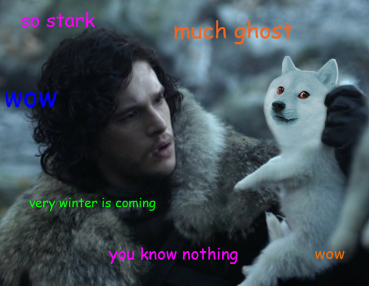

Queen Alicent went at once to the king’s bedchamber, accompanied by Ser Criston Cole, Lord Commander of the Kingsguard. Once they had confirmed that Viserys was dead, Her Grace ordered his room sealed and placed under guard. The serving man who had found the king’s body was taken into custody, to make certain he did not spread the tale. Ser Criston returned to White Sword Tower and sent his brothers of the Kingsguard to summon the members of the king’s small council. It was the hour of the owl.
Then as now, the Sworn Brotherhood of the Kingsguard consisted of seven knights, men of proven loyalty and undoubted prowess who had taken solemn oaths to devote their lives to defending the king’s person and kin. Only five of the white cloaks were in King’s Landing at the time of Viserys’s death; Ser Criston himself, Ser Arryk Cargyll, Ser Rickard Thorne, Ser Steffon Darklyn, and Ser Willis Fell. Ser Erryk Cargyll (twin to Ser Arryk) and Ser Lorent Marbrand, with Princess Rhaenyra on Dragonstone, remained unaware and uninvolved as their brothers-in-arms went forth into the night to rouse the members of the small council from their beds.
Gathering in the queen’s chambers as the body of her lord husband grew cold above were Queen Alicent herself; her father Ser Otto Hightower, Hand of the King; Ser Criston Cole, Lord Commander of the Kingsguard; Grand Maester Orwyle; Lord Lyman Beesbury, master of coin, a man of eighty; Ser Tyland Lannister, master of ships, brother to the Lord of Casterly Rock; Larys Strong, called Larys Clubfoot, Lord of Harrenhal, master of whisperers; and Lord Jasper Wylde, called Ironrod, master of laws.
Grand Maester Orwyle opened the meeting by reviewing the customary tasks and procedures required at the death of a king. He said, “Septon Eustace should be summoned to perform the last rites and pray for the king’s soul. A raven must needs be sent to Dragonstone at once to inform Princess Rhaenyra of her father’s passing. Mayhaps Her Grace the queen would care to write the message, so as to soften these sad tidings with some words of condolence? The bells are always rung to announce the death of a king, someone should see to that, and of course we must begin to make our preparations for Queen Rhaenyra’s coronation—”
Ser Otto Hightower cut him off. “All this must needs wait,” he declared, “until the question of succession is settled.” As the King’s Hand, he was empowered to speak with the king’s voice, even to sit the Iron Throne in the king’s absence. Viserys had granted him the authority to rule over the Seven Kingdoms, and “until such time as our new king is crowned,” that rule would continue.
“Until our new queen is crowned,” Lord Beesbury said, in a waspish tone.
“King,” insisted Queen Alicent. “The Iron Throne by rights must pass to His Grace’s eldest trueborn son.”